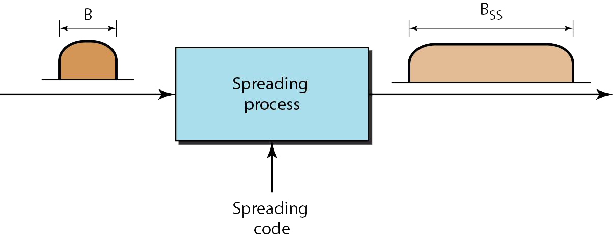
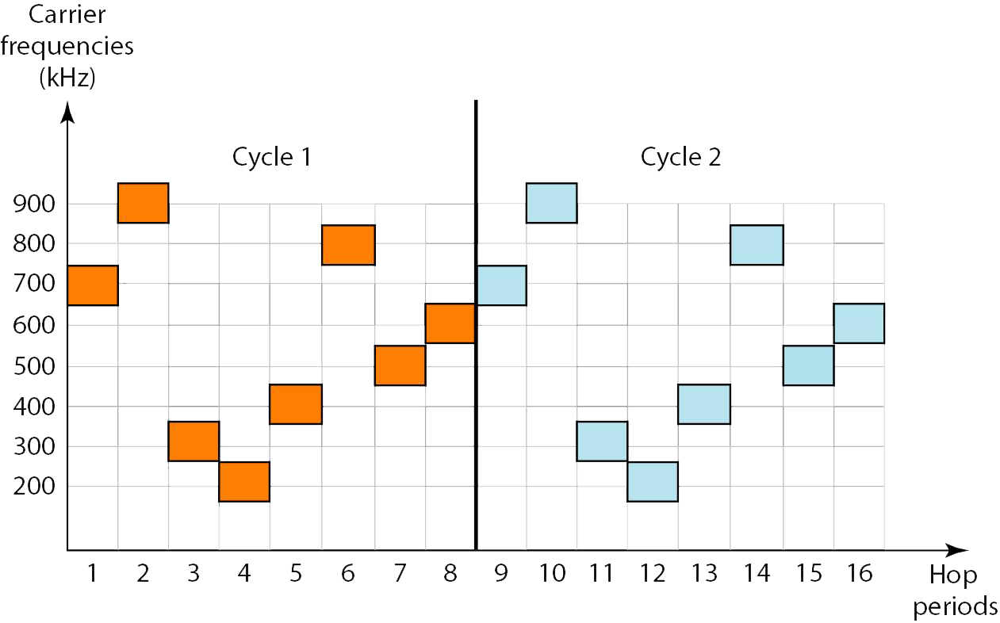
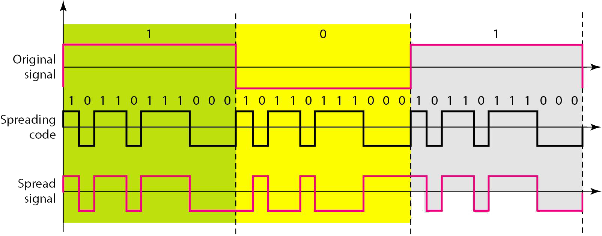

Definición
La multiplexación combina señales de varias fuentes para conseguir un uso eficiente del ancho de banda; el ancho de banda disponible de un enlace se divide entre las fuentes. En el espectro ensanchado, también se combinan señales de varias fuentes para tener un ancho de banda mayor, pero el objetivo es algo diferente. El ensanchado del espectro se diseña para su uso en aplicaciones inalámbricas (LAN y WAN). En este tipo de aplicaciones, existen aspectos que tienen más importancia que la eficiencia del ancho de banda. En las aplicaciones inalámbricas, todas las estaciones utilizan el aire (o el vacío) como medio de comunicación. Las estaciones deben ser capaces de compartir el medio sin ser interceptadas por un escuchador y sin sufrir interferencias de intrusos (por ejemplo, en operaciones militares).
Para alcanzar estos objetivos, las técnicas de espectro ensanchado añaden redundancia; ensanchan el espectro original necesario para cada estación. Si el ancho de banda requerido por cada estación es B, el ensanchado del espectro lo expande a Bss, de forma que Bss >> B. El ancho de banda expandido permite al emisor envolver su mensaje en un sobre más protegido para obtener una transmisión más segura. Una analogía es el envió de un regalo caro y delicado. Se puede insertar el regalo en una caja especial para evitar los daños durante el transporte y se puede usar un servicio de entrega de calidad para garantizar la seguridad del paquete.
Figura 20. Espectro ensanchado.

Técnicas de ensanchado
Espectro ensanchado por salto de frecuencia (FHSS)
Es una técnica que utiliza M frecuencias portadoras diferentes que son moduladas por la señal origen. En un instante, la señal modula una frecuencia portada; en el siguiente, la señal modula otra frecuencia. Aunque la modulación se hace utilizando una frecuencia portadora cada vez, se usan M frecuencias durante un largo periodo. El ancho de banda ocupado por un origen del ensanchado es Bs>B
Figura 21. Ciclos FHSS.

Espectro ensanchado por secuencia directa (DSSS)
También expande el ancho de banda de la señal original, pero el proceso es diferente. En DSSS, se reemplaza cada bit de datos por n bits utilizando un código de ensanchado. En otras palabras, cada bit tiene asignado un código de n bits, denominados chips donde la tasa de chips es n veces la tasa de bits de datos.
Figura 22. Ejemplo DSSS.
